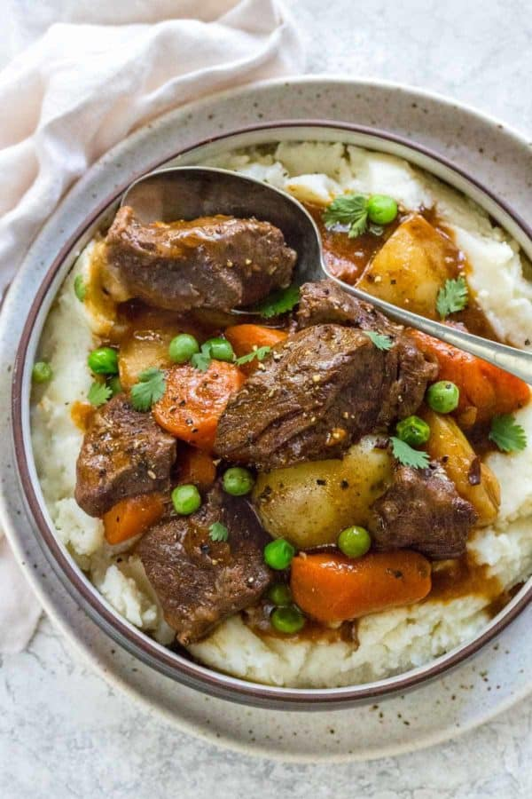

Beef Stew

Description
An Instant Pot recipe that's easy to cook and tastes pretty good.
It also healhy and comprised of mostly real food. Enjoy!
Ingredients
- Beef
- Potatoes
- Carrots
- Beef Stock
- Onions
- Thyme
- Tomatoe Paste
- Garlic
- Frozen Peas
Steps
- Cut the aromatics and beef.
- Season and sear the beef in two batches
- Soften the aromatics
- Cut the vegetables
- Add the seasonings and liquid
- Add the vegetables and seared beef
- Cook on HIGH pressure for 25 minutes
- Natural release pressure for 10 minutes and make the cornstarch slurry
Natural release pressure for 10 minutes and make the cornstarch slurry
- Release the remaining pressure the thicken the sauce
- Season and Serve